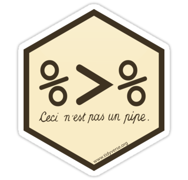

Chapter 3 Tidy Data

Take the quiz to see if you need to review this chapter.
3.1 Learning Objectives
3.1.1 Basic
3.1.2 Intermediate
3.1.3 Advanced
- Be able to use regular expressions to separate complex columns
3.2 Resources
- Tidy Data
- Chapter 12: Tidy Data in R for Data Science
- Chapter 18: Pipes in R for Data Science
- Data wrangling cheat sheet
3.3 Setup
3.4 Three Rules for Tidy Data
- Each variable must have its own column
- Each observation must have its own row
- Each value must have its own cell
This table has three observations per row and the total_meanRT column contains two values.
| id | score_1 | score_2 | score_3 | rt_1 | rt_2 | rt_3 | total_meanRT |
|---|---|---|---|---|---|---|---|
| 1 | 4 | 3 | 7 | 857 | 890 | 859 | 14 (869) |
| 2 | 3 | 1 | 1 | 902 | 900 | 959 | 5 (920) |
| 3 | 2 | 5 | 4 | 757 | 823 | 901 | 11 (827) |
| 4 | 6 | 2 | 6 | 844 | 788 | 624 | 14 (752) |
| 5 | 1 | 7 | 2 | 659 | 764 | 690 | 10 (704) |
This is the tidy version.
| id | trial | rt | score | total | mean_rt |
|---|---|---|---|---|---|
| 1 | 1 | 857 | 4 | 14 | 869 |
| 1 | 2 | 890 | 3 | 14 | 869 |
| 1 | 3 | 859 | 7 | 14 | 869 |
| 2 | 1 | 902 | 3 | 5 | 920 |
| 2 | 2 | 900 | 1 | 5 | 920 |
| 2 | 3 | 959 | 1 | 5 | 920 |
| 3 | 1 | 757 | 2 | 11 | 827 |
| 3 | 2 | 823 | 5 | 11 | 827 |
| 3 | 3 | 901 | 4 | 11 | 827 |
| 4 | 1 | 844 | 6 | 14 | 752 |
| 4 | 2 | 788 | 2 | 14 | 752 |
| 4 | 3 | 624 | 6 | 14 | 752 |
| 5 | 1 | 659 | 1 | 10 | 704 |
| 5 | 2 | 764 | 7 | 10 | 704 |
| 5 | 3 | 690 | 2 | 10 | 704 |
3.5 Tidying Data
{#data-personality} Download the data from personality.csv. These data are from a 5-factor (OCEAN) personality questionnaire. Each question is labelled with the domain (Op = openness, Co = concientiousness, Ex = extraversion, Ag = agreeableness, and Ne = neuroticism) and the question number.
| user_id | date | Op1 | Ne1 | Ne2 | Op2 | Ex1 | Ex2 | Co1 | Co2 | Ne3 | Ag1 | Ag2 | Ne4 | Ex3 | Co3 | Op3 | Ex4 | Op4 | Ex5 | Ag3 | Co4 | Co5 | Ne5 | Op5 | Ag4 | Op6 | Co6 | Ex6 | Ne6 | Co7 | Ag5 | Co8 | Ex7 | Ne7 | Co9 | Op7 | Ne8 | Ag6 | Ag7 | Co10 | Ex8 | Ex9 |
|---|---|---|---|---|---|---|---|---|---|---|---|---|---|---|---|---|---|---|---|---|---|---|---|---|---|---|---|---|---|---|---|---|---|---|---|---|---|---|---|---|---|---|
| 0 | 2006-03-23 | 3 | 4 | 0 | 6 | 3 | 3 | 3 | 3 | 0 | 2 | 1 | 3 | 3 | 2 | 2 | 1 | 3 | 3 | 1 | 3 | 0 | 3 | 6 | 1 | 0 | 6 | 3 | 1 | 3 | 3 | 3 | 3 | NA | 3 | 0 | 2 | NA | 3 | 1 | 2 | 4 |
| 1 | 2006-02-08 | 6 | 0 | 6 | 0 | 0 | 0 | 0 | 0 | 0 | 0 | 6 | 6 | 6 | 0 | 6 | 0 | 0 | 0 | 0 | 6 | 6 | 0 | 6 | 0 | 6 | 0 | 6 | 6 | 6 | 6 | 0 | 6 | 0 | 6 | 6 | 0 | 6 | 0 | 6 | 0 | 6 |
| 2 | 2005-10-24 | 6 | 0 | 6 | 0 | 0 | 0 | 0 | 0 | 0 | 0 | 6 | 6 | 5 | 1 | 5 | 1 | 1 | 1 | 1 | 5 | 5 | 1 | 5 | 1 | 5 | 1 | 5 | 5 | 5 | 5 | 1 | 5 | 1 | 5 | 5 | 1 | 5 | 1 | 5 | 1 | 5 |
| 5 | 2005-12-07 | 6 | 4 | 4 | 4 | 2 | 3 | 3 | 3 | 1 | 4 | 0 | 2 | 5 | 3 | 5 | 3 | 6 | 6 | 1 | 5 | 5 | 4 | 2 | 4 | 1 | 4 | 3 | 1 | 1 | 0 | 1 | 4 | 2 | 4 | 5 | 1 | 2 | 1 | 5 | 4 | 5 |
| 8 | 2006-07-27 | 6 | 1 | 2 | 6 | 2 | 3 | 5 | 4 | 0 | 6 | 5 | 3 | 3 | 4 | 5 | 3 | 6 | 3 | 0 | 5 | 5 | 1 | 5 | 6 | 6 | 6 | 0 | 0 | 3 | 2 | 3 | 1 | 0 | 3 | 5 | 1 | 3 | 1 | 3 | 3 | 5 |
| 108 | 2006-02-28 | 3 | 2 | 1 | 4 | 4 | 4 | 4 | 3 | 1 | 5 | 4 | 2 | 3 | 4 | 4 | 3 | 3 | 3 | 4 | 3 | 3 | 1 | 4 | 5 | 4 | 5 | 4 | 1 | 4 | 5 | 4 | 2 | 2 | 4 | 4 | 1 | 4 | 3 | 5 | 4 | 2 |
3.5.1 gather()
gather(data, key = "key", value = "value", ..., na.rm = FALSE, convert = FALSE, factor_key = FALSE)
keyis what you want to call the new column that the gathered column headers will go into; it’s “question” in this example.valueis what you want to call the values in the gathered columns; they’re “score” in this example....refers to the columns you want to gather. You can refer to them by their names, likecol1, col2, col3, col4orcol1:col4or by their numbers, like8, 9, 10or8:10.na.rmdetermines whether rows withNAvalues should be removedconvertwhether to automatically convert the results to another data typefactor_keywhether to store the key values as a factor (with the same order as in the table) or character vector
ocean is in wide format, with a separate column for each question. Change it to long format, with a row for each user/question observation. The resulting dataframe should have the columns: user_id, date, question, and score.
| user_id | date | question | score |
|---|---|---|---|
| 0 | 2006-03-23 | Op1 | 3 |
| 1 | 2006-02-08 | Op1 | 6 |
| 2 | 2005-10-24 | Op1 | 6 |
| 5 | 2005-12-07 | Op1 | 6 |
| 8 | 2006-07-27 | Op1 | 6 |
| 108 | 2006-02-28 | Op1 | 3 |
3.5.2 separate()
separate(data, col, into, sep = "[^[:alnum:]]+", remove = TRUE, convert = FALSE, extra = "warn", fill = "warn")
colis the column you want to separateintois a vector of new column namessepis the character(s) that separate your new columns. This defaults to anything that isn’t alphanumeric, like .,_-/:removedetermines whether the separated column (col) will be removed from the new data table. The default is to remove it.convertwhether to automatically convert the results to another data typeextracontrols what happens when there are too many piecesfillcontrols what happens when there are not enough pieces
Split the question column into two columns: domain and qnumber.
There is no character to split on, here, but you can separate a column after a specific number of characters by setting sep to an integer. For example, to split “abcde” after the third character, use sep = 3, which results in c("abc", "de"). You can also use negative number to split before the nth character from the right. For example, to split a column that has words of various lengths and 2-digit suffixes (like “lisa03”“,”amanda38"), you can use sep = -2.
| user_id | date | domain | qnumber | score |
|---|---|---|---|---|
| 0 | 2006-03-23 | Op | 1 | 3 |
| 1 | 2006-02-08 | Op | 1 | 6 |
| 2 | 2005-10-24 | Op | 1 | 6 |
| 5 | 2005-12-07 | Op | 1 | 6 |
| 8 | 2006-07-27 | Op | 1 | 6 |
| 108 | 2006-02-28 | Op | 1 | 3 |
If you want to separate just at full stops, you need to use sep = "\\.", not sep = ".". The two slashes escape the full stop, making it interpreted as a literal full stop and not the regular expression for any character.
3.5.3 unite()
unite(data, col, ..., sep = "_", remove = TRUE)
colis your new united column...refers to the columns you want to unitesepis the character(s) that will separate your united columnsremovedetermines whether the united columns (...) will be removed from the new data table. The default is to remove them.
Put the domain and qnumber columns back together into a new column named domain_n. Make it in a format like “Op_Q1”.
| user_id | date | domain_n | score |
|---|---|---|---|
| 0 | 2006-03-23 | Op_Q1 | 3 |
| 1 | 2006-02-08 | Op_Q1 | 6 |
| 2 | 2005-10-24 | Op_Q1 | 6 |
| 5 | 2005-12-07 | Op_Q1 | 6 |
| 8 | 2006-07-27 | Op_Q1 | 6 |
| 108 | 2006-02-28 | Op_Q1 | 3 |
3.5.4 spread()
spread(data, key, value, fill = NA, convert = FALSE, drop = TRUE, sep = NULL)
You can reverse the processes above, as well. For example, you can convert data from long format into wide format.
keyis the column that contains your new column headersvalueis the column that contains the values in the new spread columns
| user_id | date | Ag_Q1 | Ag_Q2 | Ag_Q3 | Ag_Q4 | Ag_Q5 | Ag_Q6 | Ag_Q7 | Co_Q1 | Co_Q10 | Co_Q2 | Co_Q3 | Co_Q4 | Co_Q5 | Co_Q6 | Co_Q7 | Co_Q8 | Co_Q9 | Ex_Q1 | Ex_Q2 | Ex_Q3 | Ex_Q4 | Ex_Q5 | Ex_Q6 | Ex_Q7 | Ex_Q8 | Ex_Q9 | Ne_Q1 | Ne_Q2 | Ne_Q3 | Ne_Q4 | Ne_Q5 | Ne_Q6 | Ne_Q7 | Ne_Q8 | Op_Q1 | Op_Q2 | Op_Q3 | Op_Q4 | Op_Q5 | Op_Q6 | Op_Q7 |
|---|---|---|---|---|---|---|---|---|---|---|---|---|---|---|---|---|---|---|---|---|---|---|---|---|---|---|---|---|---|---|---|---|---|---|---|---|---|---|---|---|---|---|
| 0 | 2006-03-23 | 2 | 1 | 1 | 1 | 3 | NA | 3 | 3 | 1 | 3 | 2 | 3 | 0 | 6 | 3 | 3 | 3 | 3 | 3 | 3 | 1 | 3 | 3 | 3 | 2 | 4 | 4 | 0 | 0 | 3 | 3 | 1 | NA | 2 | 3 | 6 | 2 | 3 | 6 | 0 | 0 |
| 1 | 2006-02-08 | 0 | 6 | 0 | 0 | 6 | 6 | 0 | 0 | 6 | 0 | 0 | 6 | 6 | 0 | 6 | 0 | 6 | 0 | 0 | 6 | 0 | 0 | 6 | 6 | 0 | 6 | 0 | 6 | 0 | 6 | 0 | 6 | 0 | 0 | 6 | 0 | 6 | 0 | 6 | 6 | 6 |
| 2 | 2005-10-24 | 0 | 6 | 1 | 1 | 5 | 5 | 1 | 0 | 5 | 0 | 1 | 5 | 5 | 1 | 5 | 1 | 5 | 0 | 0 | 5 | 1 | 1 | 5 | 5 | 1 | 5 | 0 | 6 | 0 | 6 | 1 | 5 | 1 | 1 | 6 | 0 | 5 | 1 | 5 | 5 | 5 |
| 5 | 2005-12-07 | 4 | 0 | 1 | 4 | 0 | 2 | 1 | 3 | 5 | 3 | 3 | 5 | 5 | 4 | 1 | 1 | 4 | 2 | 3 | 5 | 3 | 6 | 3 | 4 | 4 | 5 | 4 | 4 | 1 | 2 | 4 | 1 | 2 | 1 | 6 | 4 | 5 | 6 | 2 | 1 | 5 |
| 8 | 2006-07-27 | 6 | 5 | 0 | 6 | 2 | 3 | 1 | 5 | 3 | 4 | 4 | 5 | 5 | 6 | 3 | 3 | 3 | 2 | 3 | 3 | 3 | 3 | 0 | 1 | 3 | 5 | 1 | 2 | 0 | 3 | 1 | 0 | 0 | 1 | 6 | 6 | 5 | 6 | 5 | 6 | 5 |
| 108 | 2006-02-28 | 5 | 4 | 4 | 5 | 5 | 4 | 3 | 4 | 5 | 3 | 4 | 3 | 3 | 5 | 4 | 4 | 4 | 4 | 4 | 3 | 3 | 3 | 4 | 2 | 4 | 2 | 2 | 1 | 1 | 2 | 1 | 1 | 2 | 1 | 3 | 4 | 4 | 3 | 4 | 4 | 4 |
3.6 Pipes

Pipes are a way to order your code in a more readable format.
Let’s say you have a small data table with 10 participant IDs, two columns with variable type A, and 2 columns with variable type B. You want to calculate the mean of the A variables and the mean of the B variables and return a table with 10 rows (1 for each participant) and 3 columns (id, A_mean and B_mean).
One way you could do this is by creating a new object at every step and using that object in the next step. This is pretty clear, but you’ve created 6 unnecessary data objects in your environment. This can get confusing in very long scripts.
# make a data table with 10 subjects
data_original <- tibble(
id = 1:10,
A1 = rnorm(10, 0),
A2 = rnorm(10, 1),
B1 = rnorm(10, 2),
B2 = rnorm(10, 3)
)
# gather columns A1 to B2 into "variable" and "value" columns
data_gathered <- gather(data_original, variable, value, A1:B2)
# separate the variable column at the _ into "var" and "var_n" columns
data_separated <- separate(data_gathered, variable, c("var", "var_n"), sep = 1)
# group the data by id and var
data_grouped <- group_by(data_separated, id, var)
# calculate the mean value for each id/var
data_summarised <- summarise(data_grouped, mean = mean(value))## `summarise()` regrouping output by 'id' (override with `.groups` argument)# spread the mean column into A and B columns
data_spread <- spread(data_summarised, var, mean)
# rename A and B to A_mean and B_mean
data <- rename(data_spread, A_mean = A, B_mean = B)
data## # A tibble: 10 x 3
## # Groups: id [10]
## id A_mean B_mean
## <int> <dbl> <dbl>
## 1 1 -0.594 1.02
## 2 2 0.744 2.72
## 3 3 0.931 3.93
## 4 4 0.720 1.97
## 5 5 -0.0281 1.95
## 6 6 -0.0983 3.21
## 7 7 0.126 0.926
## 8 8 1.45 2.38
## 9 9 0.298 1.66
## 10 10 0.559 2.10
You can name each object data and keep replacing the old data object with the new one at each step. This will keep your environment clean, but I don’t recommend it because it makes it too easy to accidentally run your code out of order when you are running line-by-line for development or debugging.
One way to avoid extra objects is to nest your functions, literally replacing each data object with the code that generated it in the previous step. This can be fine for very short chains.
But it gets extremely confusing for long chains:
# do not ever do this!!
data <- rename(
spread(
summarise(
group_by(
separate(
gather(
tibble(
id = 1:10,
A1 = rnorm(10, 0),
A2 = rnorm(10, 1),
B1 = rnorm(10, 2),
B2 = rnorm(10,3)),
variable, value, A1:B2),
variable, c("var", "var_n"), sep = 1),
id, var),
mean = mean(value)),
var, mean),
A_mean = A, B_mean = B)## `summarise()` regrouping output by 'id' (override with `.groups` argument)The pipe lets you “pipe” the result of each function into the next function, allowing you to put your code in a logical order without creating too many extra objects.
# calculate mean of A and B variables for each participant
data <- tibble(
id = 1:10,
A1 = rnorm(10, 0),
A2 = rnorm(10, 1),
B1 = rnorm(10, 2),
B2 = rnorm(10,3)
) %>%
gather(variable, value, A1:B2) %>%
separate(variable, c("var", "var_n"), sep=1) %>%
group_by(id, var) %>%
summarise(mean = mean(value)) %>%
spread(var, mean) %>%
rename(A_mean = A, B_mean = B)## `summarise()` regrouping output by 'id' (override with `.groups` argument)You can read this code from top to bottom as follows:
- Make a tibble called
datawith- id of 1 to 10,
- A1 of 10 random numbers from a normal distribution,
- A2 of 10 random numbers from a normal distribution,
- B1 of 10 random numbers from a normal distribution,
- B2 of 10 random numbers from a normal distribution; and then
- Gather to create
variableandvaluecolumn from columnsA_1toB_2; and then - Separate the column
variableinto 2 new columns calledvarandvar_n, separate at character 1; and then - Group by columns
idandvar; and then - Summarise and new column called
meanas the mean of thevaluecolumn for each group; and then - Spread to make new columns with the key names in
varand values inmean; and then - Rename to make columns called
A_mean(oldA) andB_mean(oldB)
You can make intermediate objects whenever you need to break up your code because it’s getting too complicated or you need to debug something.
You can debug a pipe by highlighting from the beginning to just before the pipe you want to stop at. Try this by highlighting from data <- to the end of the separate function and typing cmd-return. What does data look like now?
Chain all the steps above using pipes.
ocean <- read_csv("https://psyteachr.github.io/msc-data-skills/data/personality.csv") %>%
gather("question", "score", Op1:Ex9) %>%
separate(question, c("domain", "qnumber"), sep = 2) %>%
unite("domain_n", domain, qnumber, sep = "_Q") %>%
spread(domain_n, score)## Parsed with column specification:
## cols(
## .default = col_double(),
## date = col_date(format = "")
## )## See spec(...) for full column specifications.3.7 More Complex Example
3.7.1 Load Data
{#data-infmort}
Get data on infant mortality rates from the CSV file
infmort.csv in the directory data.
## Parsed with column specification:
## cols(
## Country = col_character(),
## Year = col_double(),
## `Infant mortality rate (probability of dying between birth and age 1 per 1000 live births)` = col_character()
## )## Rows: 5,044
## Columns: 3
## $ Country <chr> …
## $ Year <dbl> …
## $ `Infant mortality rate (probability of dying between birth and age 1 per 1000 live births)` <chr> …{#data-matmort}
Get data on maternal mortality from from the excel file
matmort.xls in the directory data
## Rows: 181
## Columns: 4
## $ Country <chr> "Afghanistan", "Albania", "Algeria", "Angola", "Argentina", "…
## $ `1990` <chr> "1 340 [ 878 - 1 950]", "71 [ 58 - 88]", "216 [ 141 - 327]"…
## $ `2000` <chr> "1 100 [ 745 - 1 570]", "43 [ 33 - 56]", "170 [ 118 - 241]"…
## $ `2015` <chr> "396 [ 253 - 620]", "29 [ 16 - 46]", "140 [ 82 - 244]", "4…Get data on country codes from https://raw.githubusercontent.com/lukes/ISO-3166-Countries-with-Regional-Codes/master/all/all.csv
ccodes <- read_csv("https://raw.githubusercontent.com/lukes/ISO-3166-Countries-with-Regional-Codes/master/all/all.csv")## Parsed with column specification:
## cols(
## name = col_character(),
## `alpha-2` = col_character(),
## `alpha-3` = col_character(),
## `country-code` = col_character(),
## `iso_3166-2` = col_character(),
## region = col_character(),
## `sub-region` = col_character(),
## `intermediate-region` = col_character(),
## `region-code` = col_character(),
## `sub-region-code` = col_character(),
## `intermediate-region-code` = col_character()
## )## Rows: 249
## Columns: 11
## $ name <chr> "Afghanistan", "Åland Islands", "Albania",…
## $ `alpha-2` <chr> "AF", "AX", "AL", "DZ", "AS", "AD", "AO", …
## $ `alpha-3` <chr> "AFG", "ALA", "ALB", "DZA", "ASM", "AND", …
## $ `country-code` <chr> "004", "248", "008", "012", "016", "020", …
## $ `iso_3166-2` <chr> "ISO 3166-2:AF", "ISO 3166-2:AX", "ISO 316…
## $ region <chr> "Asia", "Europe", "Europe", "Africa", "Oce…
## $ `sub-region` <chr> "Southern Asia", "Northern Europe", "South…
## $ `intermediate-region` <chr> NA, NA, NA, NA, NA, NA, "Middle Africa", "…
## $ `region-code` <chr> "142", "150", "150", "002", "009", "150", …
## $ `sub-region-code` <chr> "034", "154", "039", "015", "061", "039", …
## $ `intermediate-region-code` <chr> NA, NA, NA, NA, NA, NA, "017", "029", NA, …3.7.2 Wide to Long
matmort is in wide format, with a separate column for each year. Change it to long format, with a row for each County/Year observation.
This example is complicated because the column names to gather are numbers. If the column names are non-standard (e.g., have spaces, start with numbers, or have special characters), you can enclose them in backticks (`) like the example below.
## Rows: 543
## Columns: 3
## $ Country <chr> "Afghanistan", "Albania", "Algeria", "Angola", "Argentina", "…
## $ Year <chr> "1990", "1990", "1990", "1990", "1990", "1990", "1990", "1990…
## $ stats <chr> "1 340 [ 878 - 1 950]", "71 [ 58 - 88]", "216 [ 141 - 327]"…3.7.3 One Piece of Data per Column
The data in the stats column is in an unusual format with some sort of confidence interval in brackets and lots of extra spaces. We don’t need any of the spaces, so first we’ll remove them with mutate.
The separate function will separate your data on anything that is not a number or letter, so try it first without specifying the sep argument. The into argument is a list of the new column names.
matmort_split <- matmort_long %>%
mutate(stats = gsub(" ", "", stats)) %>%
separate(stats, c("rate", "ci_low", "ci_hi"))## Warning: Expected 3 pieces. Additional pieces discarded in 543 rows [1, 2, 3, 4,
## 5, 6, 7, 8, 9, 10, 11, 12, 13, 14, 15, 16, 17, 18, 19, 20, ...].## Rows: 543
## Columns: 5
## $ Country <chr> "Afghanistan", "Albania", "Algeria", "Angola", "Argentina", "…
## $ Year <chr> "1990", "1990", "1990", "1990", "1990", "1990", "1990", "1990…
## $ rate <chr> "1340", "71", "216", "1160", "72", "58", "8", "8", "64", "46"…
## $ ci_low <chr> "878", "58", "141", "627", "64", "51", "7", "7", "56", "34", …
## $ ci_hi <chr> "1950", "88", "327", "2020", "80", "65", "9", "10", "74", "61…
The gsub(pattern, replacement, x) function is a flexible way to do search and replace. The example above replaces all occurances of the pattern " " (a space), with the replacement "" (nothing), in the string x (the stats column). Use sub() instead if you only want to replace the first occurance of a pattern. We only used a simple pattern here, but you can use more complicated regex patterns to replace, for example, all even numbers (e.g., gsub(“[:02468:]”, "“,”id = 123456“)) or all occurances of the word colour in US or UK spelling (e.g., gsub(”colo(u)?r“,”**“,”replace color, colour, or colours, but not collors")).
3.7.3.1 Handle spare columns with extra
The previous example should have given you an error warning about “Too many values at 543 locations”. This is because separate splits the column at the brackets and dashes, so the text 100[90-110] would split into four values c(“100”, “90”, “110”, "“), but we only specified 3 new columns. The fourth value is always empty (just the part after the last bracket), so we are happy to drop it, but separate generates a warning so you don’t do that accidentally. You can turn off the warning by adding the extra argument and setting it to “drop”. Look at the help for ??tidyr::separate to see what the other options do.
matmort_split <- matmort_long %>%
mutate(stats = gsub(" ", "", stats)) %>%
separate(stats, c("rate", "ci_low", "ci_hi"), extra = "drop")
glimpse(matmort_split)## Rows: 543
## Columns: 5
## $ Country <chr> "Afghanistan", "Albania", "Algeria", "Angola", "Argentina", "…
## $ Year <chr> "1990", "1990", "1990", "1990", "1990", "1990", "1990", "1990…
## $ rate <chr> "1340", "71", "216", "1160", "72", "58", "8", "8", "64", "46"…
## $ ci_low <chr> "878", "58", "141", "627", "64", "51", "7", "7", "56", "34", …
## $ ci_hi <chr> "1950", "88", "327", "2020", "80", "65", "9", "10", "74", "61…3.7.3.2 Set delimiters with sep
Now do the same with infmort. It’s already in long format, so you don’t need to use gather, but the third column has a crazy long name, so we can just refer to it by its column number (3).
infmort_split <- infmort %>%
separate(3, c("rate", "ci_low", "ci_hi"), extra = "drop")
glimpse(infmort_split)## Rows: 5,044
## Columns: 5
## $ Country <chr> "Afghanistan", "Afghanistan", "Afghanistan", "Afghanistan", "…
## $ Year <dbl> 2015, 2014, 2013, 2012, 2011, 2010, 2009, 2008, 2007, 2006, 2…
## $ rate <chr> "66", "68", "69", "71", "73", "75", "76", "78", "80", "82", "…
## $ ci_low <chr> "3", "1", "9", "7", "4", "1", "8", "6", "4", "3", "4", "7", "…
## $ ci_hi <chr> "52", "55", "58", "61", "64", "66", "69", "71", "73", "75", "…Wait, that didn’t work at all! It split the column on spaces, brackets, and full stops. We just want to split on the spaces, brackets and dashes. So we need to manually set sep to what the delimiters are. Also, once there are more than a few arguments specified for a function, it’s easier to read them if you put one argument on each line.
You can use regular expressions to separate complex columns. Here, we want to separate on dashes and brackets. You can separate on a list of delimiters by putting them in parentheses, separated by “|”. It’s a little more complicated because brackets have a special meaning in regex, so you need to “escape” the left one with two backslashes “\”.
infmort_split <- infmort %>%
separate(
col = 3,
into = c("rate", "ci_low", "ci_hi"),
extra = "drop",
sep = "(\\[|-|])"
)
glimpse(infmort_split)## Rows: 5,044
## Columns: 5
## $ Country <chr> "Afghanistan", "Afghanistan", "Afghanistan", "Afghanistan", "…
## $ Year <dbl> 2015, 2014, 2013, 2012, 2011, 2010, 2009, 2008, 2007, 2006, 2…
## $ rate <chr> "66.3 ", "68.1 ", "69.9 ", "71.7 ", "73.4 ", "75.1 ", "76.8 "…
## $ ci_low <chr> "52.7", "55.7", "58.7", "61.6", "64.4", "66.9", "69.0", "71.2…
## $ ci_hi <chr> "83.9", "83.6", "83.5", "83.7", "84.2", "85.1", "86.1", "87.3…3.7.3.3 Fix data types with convert
That’s better. Notice the Year, rate, ci_low and ci_hi. That means these columns hold characters (like words), not numbers or integers. This can cause problems when you try to do thigs like average the numbers (you can’t average words), so we can fix it by adding the argument convert and setting it to TRUE.
infmort_split <- infmort %>%
separate(3, c("rate", "ci_low", "ci_hi"), extra = "drop", sep = "(\\[|-|])", convert = TRUE)
glimpse(infmort_split)## Rows: 5,044
## Columns: 5
## $ Country <chr> "Afghanistan", "Afghanistan", "Afghanistan", "Afghanistan", "…
## $ Year <dbl> 2015, 2014, 2013, 2012, 2011, 2010, 2009, 2008, 2007, 2006, 2…
## $ rate <dbl> 66.3, 68.1, 69.9, 71.7, 73.4, 75.1, 76.8, 78.6, 80.4, 82.3, 8…
## $ ci_low <dbl> 52.7, 55.7, 58.7, 61.6, 64.4, 66.9, 69.0, 71.2, 73.4, 75.5, 7…
## $ ci_hi <dbl> 83.9, 83.6, 83.5, 83.7, 84.2, 85.1, 86.1, 87.3, 88.9, 90.7, 9…Do the same for matmort.
matmort_split <- matmort_long %>%
mutate(stats = gsub(" ", "", stats)) %>%
separate(stats, c("rate", "ci_low", "ci_hi"), extra = "drop", convert = TRUE)
glimpse(matmort_split)## Rows: 543
## Columns: 5
## $ Country <chr> "Afghanistan", "Albania", "Algeria", "Angola", "Argentina", "…
## $ Year <chr> "1990", "1990", "1990", "1990", "1990", "1990", "1990", "1990…
## $ rate <int> 1340, 71, 216, 1160, 72, 58, 8, 8, 64, 46, 26, 569, 58, 33, 9…
## $ ci_low <int> 878, 58, 141, 627, 64, 51, 7, 7, 56, 34, 20, 446, 47, 28, 7, …
## $ ci_hi <int> 1950, 88, 327, 2020, 80, 65, 9, 10, 74, 61, 33, 715, 72, 38, …3.7.4 All in one step
We can chain all the steps above together, since we don’t need those intermediate dataframes.
infmort <- read_csv("data/infmort.csv") %>%
separate(
3,
c("rate", "ci_low", "ci_hi"),
extra = "drop",
sep = "(\\[|-|])",
convert = TRUE
)## Parsed with column specification:
## cols(
## Country = col_character(),
## Year = col_double(),
## `Infant mortality rate (probability of dying between birth and age 1 per 1000 live births)` = col_character()
## )matmort <- read_xls("data/matmort.xls") %>%
gather("Year", "stats", `1990`:`2015`) %>%
mutate(stats = gsub(" ", "", stats)) %>%
separate(
stats,
c("rate", "ci_low", "ci_hi"),
extra = "drop",
convert = TRUE
)
glimpse(matmort)
glimpse(infmort)## Rows: 543
## Columns: 5
## $ Country <chr> "Afghanistan", "Albania", "Algeria", "Angola", "Argentina", "…
## $ Year <chr> "1990", "1990", "1990", "1990", "1990", "1990", "1990", "1990…
## $ rate <int> 1340, 71, 216, 1160, 72, 58, 8, 8, 64, 46, 26, 569, 58, 33, 9…
## $ ci_low <int> 878, 58, 141, 627, 64, 51, 7, 7, 56, 34, 20, 446, 47, 28, 7, …
## $ ci_hi <int> 1950, 88, 327, 2020, 80, 65, 9, 10, 74, 61, 33, 715, 72, 38, …
## Rows: 5,044
## Columns: 5
## $ Country <chr> "Afghanistan", "Afghanistan", "Afghanistan", "Afghanistan", "…
## $ Year <dbl> 2015, 2014, 2013, 2012, 2011, 2010, 2009, 2008, 2007, 2006, 2…
## $ rate <dbl> 66.3, 68.1, 69.9, 71.7, 73.4, 75.1, 76.8, 78.6, 80.4, 82.3, 8…
## $ ci_low <dbl> 52.7, 55.7, 58.7, 61.6, 64.4, 66.9, 69.0, 71.2, 73.4, 75.5, 7…
## $ ci_hi <dbl> 83.9, 83.6, 83.5, 83.7, 84.2, 85.1, 86.1, 87.3, 88.9, 90.7, 9…3.7.5 Columns by Year
Spread out the infant mortality rate by year.
## Rows: 4,934
## Columns: 29
## $ Country <chr> "Afghanistan", "Afghanistan", "Afghanistan", "Afghanistan", "…
## $ ci_low <dbl> 52.7, 55.7, 58.7, 61.6, 64.4, 66.9, 69.0, 71.2, 73.4, 75.5, 7…
## $ ci_hi <dbl> 83.9, 83.6, 83.5, 83.7, 84.2, 85.1, 86.1, 87.3, 88.9, 90.7, 9…
## $ `1990` <dbl> NA, NA, NA, NA, NA, NA, NA, NA, NA, NA, NA, NA, NA, NA, NA, N…
## $ `1991` <dbl> NA, NA, NA, NA, NA, NA, NA, NA, NA, NA, NA, NA, NA, NA, NA, N…
## $ `1992` <dbl> NA, NA, NA, NA, NA, NA, NA, NA, NA, NA, NA, NA, NA, NA, NA, N…
## $ `1993` <dbl> NA, NA, NA, NA, NA, NA, NA, NA, NA, NA, NA, NA, NA, NA, NA, N…
## $ `1994` <dbl> NA, NA, NA, NA, NA, NA, NA, NA, NA, NA, NA, NA, NA, NA, NA, N…
## $ `1995` <dbl> NA, NA, NA, NA, NA, NA, NA, NA, NA, NA, NA, NA, NA, NA, NA, N…
## $ `1996` <dbl> NA, NA, NA, NA, NA, NA, NA, NA, NA, NA, NA, NA, NA, NA, NA, N…
## $ `1997` <dbl> NA, NA, NA, NA, NA, NA, NA, NA, NA, NA, NA, NA, NA, NA, NA, N…
## $ `1998` <dbl> NA, NA, NA, NA, NA, NA, NA, NA, NA, NA, NA, NA, NA, NA, NA, N…
## $ `1999` <dbl> NA, NA, NA, NA, NA, NA, NA, NA, NA, NA, NA, NA, NA, NA, NA, N…
## $ `2000` <dbl> NA, NA, NA, NA, NA, NA, NA, NA, NA, NA, NA, NA, NA, NA, NA, 9…
## $ `2001` <dbl> NA, NA, NA, NA, NA, NA, NA, NA, NA, NA, NA, NA, NA, NA, 93.4,…
## $ `2002` <dbl> NA, NA, NA, NA, NA, NA, NA, NA, NA, NA, NA, NA, NA, 91.2, NA,…
## $ `2003` <dbl> NA, NA, NA, NA, NA, NA, NA, NA, NA, NA, NA, NA, 89, NA, NA, N…
## $ `2004` <dbl> NA, NA, NA, NA, NA, NA, NA, NA, NA, NA, NA, 86.7, NA, NA, NA,…
## $ `2005` <dbl> NA, NA, NA, NA, NA, NA, NA, NA, NA, NA, 84.4, NA, NA, NA, NA,…
## $ `2006` <dbl> NA, NA, NA, NA, NA, NA, NA, NA, NA, 82.3, NA, NA, NA, NA, NA,…
## $ `2007` <dbl> NA, NA, NA, NA, NA, NA, NA, NA, 80.4, NA, NA, NA, NA, NA, NA,…
## $ `2008` <dbl> NA, NA, NA, NA, NA, NA, NA, 78.6, NA, NA, NA, NA, NA, NA, NA,…
## $ `2009` <dbl> NA, NA, NA, NA, NA, NA, 76.8, NA, NA, NA, NA, NA, NA, NA, NA,…
## $ `2010` <dbl> NA, NA, NA, NA, NA, 75.1, NA, NA, NA, NA, NA, NA, NA, NA, NA,…
## $ `2011` <dbl> NA, NA, NA, NA, 73.4, NA, NA, NA, NA, NA, NA, NA, NA, NA, NA,…
## $ `2012` <dbl> NA, NA, NA, 71.7, NA, NA, NA, NA, NA, NA, NA, NA, NA, NA, NA,…
## $ `2013` <dbl> NA, NA, 69.9, NA, NA, NA, NA, NA, NA, NA, NA, NA, NA, NA, NA,…
## $ `2014` <dbl> NA, 68.1, NA, NA, NA, NA, NA, NA, NA, NA, NA, NA, NA, NA, NA,…
## $ `2015` <dbl> 66.3, NA, NA, NA, NA, NA, NA, NA, NA, NA, NA, NA, NA, NA, NA,…
Nope, that didn’t work at all, but it’s a really common mistake when spreading data. This is because spread matches on all the remaining columns, so Afghanistan with ci_low of 52.7 is treated as a different observation than Afghanistan with ci_low of 55.7. We can fix this by merging the rate, ci_low and ci_hi columns back together.
3.7.6 Merge Columns
Merge the rate and confidence intervals into one column.
## Rows: 5,044
## Columns: 3
## $ Country <chr> "Afghanistan", "Afghanistan", "Afghanistan", "Afghanistan", "…
## $ Year <dbl> 2015, 2014, 2013, 2012, 2011, 2010, 2009, 2008, 2007, 2006, 2…
## $ rate_ci <chr> "66.3_52.7_83.9", "68.1_55.7_83.6", "69.9_58.7_83.5", "71.7_6…3.7.6.1 Control separation with sep
unite() separates merged names with an underscore by default.
Set the sep argument if you want to change that.
infmort_united <- infmort %>%
unite(rate_ci, rate, ci_low, ci_hi, sep = ", ")
glimpse(infmort_united)## Rows: 5,044
## Columns: 3
## $ Country <chr> "Afghanistan", "Afghanistan", "Afghanistan", "Afghanistan", "…
## $ Year <dbl> 2015, 2014, 2013, 2012, 2011, 2010, 2009, 2008, 2007, 2006, 2…
## $ rate_ci <chr> "66.3, 52.7, 83.9", "68.1, 55.7, 83.6", "69.9, 58.7, 83.5", "…
What if you want to put it back into the format “rate [ci_low - ci_hi]”? Then, mutate and paste are a better choice than unite, but you have to get rid of the rate, ci_low and ci_hi columns with select. You’ll learn more about these function in the Data Manipulation lesson.
infmort_united <- infmort %>%
mutate(rate_ci = paste0(rate, " [", ci_low, " - ", ci_hi, "]"))
glimpse(infmort_united)## Rows: 5,044
## Columns: 6
## $ Country <chr> "Afghanistan", "Afghanistan", "Afghanistan", "Afghanistan", "…
## $ Year <dbl> 2015, 2014, 2013, 2012, 2011, 2010, 2009, 2008, 2007, 2006, 2…
## $ rate <dbl> 66.3, 68.1, 69.9, 71.7, 73.4, 75.1, 76.8, 78.6, 80.4, 82.3, 8…
## $ ci_low <dbl> 52.7, 55.7, 58.7, 61.6, 64.4, 66.9, 69.0, 71.2, 73.4, 75.5, 7…
## $ ci_hi <dbl> 83.9, 83.6, 83.5, 83.7, 84.2, 85.1, 86.1, 87.3, 88.9, 90.7, 9…
## $ rate_ci <chr> "66.3 [52.7 - 83.9]", "68.1 [55.7 - 83.6]", "69.9 [58.7 - 83.…Now let’s try spreading on year again. Notice here we’re uniting columns rate:ci_hi, instead of rate, ci_low, ci_hi. The colon just says to select all the columns between the first and last named ones. Check the help documentation for ??tidyr::unite and ??tidyr::select to see other ways to select columns.
infmort_wide <- infmort %>%
unite(rate_ci, rate:ci_hi, sep = ", ") %>%
spread(Year, rate_ci)
glimpse(infmort_wide)## Rows: 194
## Columns: 27
## $ Country <chr> "Afghanistan", "Albania", "Algeria", "Andorra", "Angola", "An…
## $ `1990` <chr> "122.5, 111.6, 135.5", "35.1, 31.3, 39.2", "39.7, 37.1, 42.3"…
## $ `1991` <chr> "118.3, 108, 129.9", "33.7, 30.2, 37.6", "38.8, 36.1, 41.6", …
## $ `1992` <chr> "114.4, 104.6, 125.2", "32.5, 29.2, 36.2", "38.1, 35.4, 41", …
## $ `1993` <chr> "110.9, 101.4, 120.9", "31.4, 28.2, 34.9", "37.5, 34.9, 40.3"…
## $ `1994` <chr> "107.7, 98.6, 117.2", "30.3, 27.1, 33.8", "36.9, 34.6, 39.4",…
## $ `1995` <chr> "105, 96.2, 114.1", "29.1, 26, 32.7", "36.3, 34.2, 38.4", "5.…
## $ `1996` <chr> "102.7, 94.5, 111.3", "27.9, 24.8, 31.5", "35.7, 34, 37.4", "…
## $ `1997` <chr> "100.7, 92.9, 109.1", "26.8, 23.6, 30.4", "35.1, 33.8, 36.5",…
## $ `1998` <chr> "98.9, 91.4, 107.2", "25.5, 22.4, 29.2", "34.7, 33.7, 35.8", …
## $ `1999` <chr> "97.2, 89.9, 105.4", "24.4, 21.2, 28.1", "34.4, 33.5, 35.2", …
## $ `2000` <chr> "95.4, 88.2, 103.6", "23.2, 20, 27", "33.9, 33.2, 34.7", "3.9…
## $ `2001` <chr> "93.4, 86.3, 101.6", "22.1, 18.8, 26", "33.3, 32.7, 34", "3.7…
## $ `2002` <chr> "91.2, 84.3, 99.3", "21, 17.6, 25.1", "32.4, 31.8, 33", "3.5,…
## $ `2003` <chr> "89, 82.1, 97", "20, 16.5, 24.3", "31.3, 30.7, 31.9", "3.3, 2…
## $ `2004` <chr> "86.7, 79.9, 94.8", "19.1, 15.4, 23.8", "30.1, 29.5, 30.6", "…
## $ `2005` <chr> "84.4, 77.7, 92.6", "18.3, 14.2, 23.4", "28.8, 28.3, 29.4", "…
## $ `2006` <chr> "82.3, 75.5, 90.7", "17.4, 13.2, 23.1", "27.6, 27, 28.1", "2.…
## $ `2007` <chr> "80.4, 73.4, 88.9", "16.7, 12.1, 22.9", "26.4, 25.9, 26.9", "…
## $ `2008` <chr> "78.6, 71.2, 87.3", "16, 11.2, 22.7", "25.3, 24.8, 25.7", "2.…
## $ `2009` <chr> "76.8, 69, 86.1", "15.4, 10.5, 22.6", "24.3, 23.8, 24.7", "2.…
## $ `2010` <chr> "75.1, 66.9, 85.1", "14.8, 9.8, 22.4", "23.5, 23, 23.9", "2.5…
## $ `2011` <chr> "73.4, 64.4, 84.2", "14.3, 9.1, 22.3", "22.8, 22.4, 23.3", "2…
## $ `2012` <chr> "71.7, 61.6, 83.7", "13.8, 8.5, 22.2", "22.4, 22, 22.9", "2.3…
## $ `2013` <chr> "69.9, 58.7, 83.5", "13.3, 7.9, 22.1", "22.1, 21.7, 22.7", "2…
## $ `2014` <chr> "68.1, 55.7, 83.6", "12.9, 7.5, 22.1", "22, 21.3, 22.7", "2.1…
## $ `2015` <chr> "66.3, 52.7, 83.9", "12.5, 7, 22.2", "21.9, 20.8, 23", "2.1, …3.8 Quiz
For questions 1-4, choose how to turn table A into table B. There may be more than one right answer.
-
Table 3.1: Table A (source) id pet morning noon night 1.1 S1 dog -1.4964122 -0.6278186 0.6267951 1.2 S2 dog -1.0112066 -0.5090254 1.0724757 1.3 S3 cat 0.6669006 0.4264954 -0.0924112 1.4 S4 cat 1.2740238 -0.2021898 0.7707817 Table 3.1: Table B (goal) id pet time score S1 dog morning -1.4964122 S2 dog morning -1.0112066 S3 cat morning 0.6669006 S4 cat morning 1.2740238 S1 dog noon -0.6278186 S2 dog noon -0.5090254 S3 cat noon 0.4264954 S4 cat noon -0.2021898 S1 dog night 0.6267951 S2 dog night 1.0724757 S3 cat night -0.0924112 S4 cat night 0.7707817 -
Table 3.2: Table A (source) id pet_number score 1.1 S1 dog.1 -0.3984966 1.2 S2 cat.1 0.9157141 1.3 S3 dog.2 0.7292385 1.4 S4 cat.2 -0.4399254 Table 3.2: Table B (goal) id pet number score 1.1 S1 dog 1 -0.3984966 1.2 S2 cat 1 0.9157141 1.3 S3 dog 2 0.7292385 1.4 S4 cat 2 -0.4399254 -
Table 3.3: Table A (source) id pet pref score 1.1 S1 dog lover 0.0933798 1.2 S2 dog hater -0.6841774 1.3 S3 cat lover 1.3188061 1.4 S4 cat hater 0.9196899 Table 3.3: Table B (goal) id pet_pref pet pref score 1.1 S1 dog_lover dog lover 0.0933798 1.2 S2 dog_hater dog hater -0.6841774 1.3 S3 cat_lover cat lover 1.3188061 1.4 S4 cat_hater cat hater 0.9196899 -
Table 3.4: Table A (source) id pet time score 1.S1.1 S1 dog morning 0.5455656 1.S2.1 S2 dog morning -0.4298306 1.S3.1 S3 cat morning -1.9146288 1.S4.1 S4 cat morning -1.4403162 1.S1.2 S1 dog night 1.4924050 1.S2.2 S2 dog night 0.4096266 1.S3.2 S3 cat night -0.9108425 Table 3.4: Table B (goal) id pet time_morning time_night S1 dog 0.5455656 1.4924050 S2 dog -0.4298306 0.4096266 S3 cat -1.9146288 -0.9108425 S4 cat -1.4403162 NA Put the built-in dataset
irisinto the following format.Species feature dimension value setosa Sepal Length 5.1 setosa Sepal Length 4.9 setosa Sepal Length 4.7 setosa Sepal Length 4.6 setosa Sepal Length 5.0 setosa Sepal Length 5.4 Re-write the following code using pipes. Assign the resulting data table to a variable called
data.# make a data table with 5 subjects providing 2 scores (A and B) in each of 2 conditions data_original <- tibble( id = c(1:5, 1:5), condition = rep(1:2, each = 5), A = rnorm(10), B = rnorm(10) ) # gather columns A and B into "score_type" and "score" columns data_gathered <- gather(data_original, score_type, score, A:B) # unite the score_type and condition columns into a column called "cell" data_united <- unite(data_gathered, cell, score_type, condition, sep = "") # spread the score column into cells data_spread <- spread(data_united, cell, score)